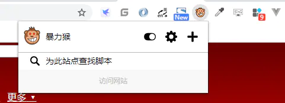
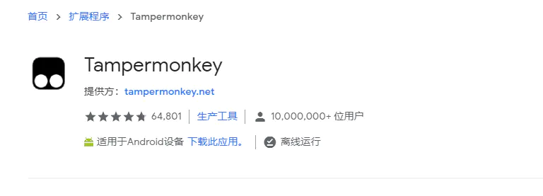
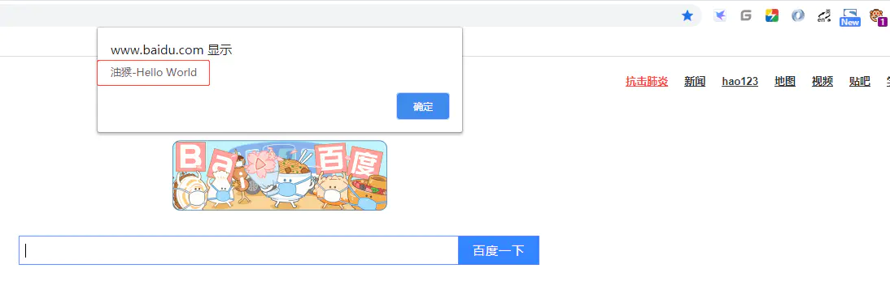

1、油猴的介绍
- 油猴也叫暴力猴(Violentmonkey)、篡改猴(Tampermonkey)，她是一个非常流行的浏览器扩展插件，常用的Google与火狐浏览器都可以使用它。
- 它有什么用？
它可以运行我们编写的一些脚本，帮我们实现页面的去广告、修改样式、下载视频，浏览隐藏内容，自动帮我们填写表格等等功能。
- 它的样子


如何开发一个油猴脚本
1、油猴的介绍
- 油猴也叫暴力猴(Violentmonkey)、篡改猴(Tampermonkey)，她是一个非常流行的浏览器扩展插件，常用的Google与火狐浏览器都可以使用它。
- 它有什么用？
- 它可以运行我们编写的一些脚本，帮我们实现页面的去广告、修改样式、下载视频，浏览隐藏内容，自动帮我们填写表格等等功能。
2、安装油猴
- 能翻墙的话自己在Google应用商店搜索
Tampermonkey或者Violentmonkey或者Greasemonkey - 或者查看我的另一篇Google浏览器插件篇里面有源码，点进去有些有压缩包可以直接拖到浏览器里即可安装。
3、脚本社区
- 既然比较流行，那应该就有比较火的脚本社区
- 脚本社区地址:https://greasyfork.org/zh-CN/scripts
4、脚本名词解析
如果社区海量的脚本里面没有你想要的，那就来编写一个属于你自己的脚本吧。
前置条件就是你需要懂点 JavsScript、HTML 、CSS 就可以了。
先看看编写脚本的一些
常用名词解释name 油猴脚本的名字
namespace 命名空间，类似于Java的包名，用来区分相同名称的脚本，一般写成作者名字或者网址就可以了
version 脚本版本，油猴脚本的更新会读取这个版本号
description 描述，用来告诉用户这个脚本是干什么用的
author 作者名字
@include/@exclude/@match 描述脚本将执行的页面。该列表会被分析并展示到脚本的简介页面，以及 用于脚本分类。可以模糊匹配
require 如果脚本依赖其他js库的话，可以使用require指令，在运行脚本之前先加载其他库，常见用法是加载jquery
connect 当用户使用GM_xmlhttpRequest请求远程数据的时候，需要使用connect指定允许访问的域名，支持域名、子域名、IP地址以及*通配符
updateURL 脚本更新网址，当油猴扩展检查更新的时候，会尝试从这个网址下载脚本，然后比对版本号
grant 指定脚本运行所需权限，如果脚本拥有相应的权限，就可以调用油猴扩展提供的API与浏览器进行交互。如果设置为none的话，则不使用沙箱环境
脚本会直接运行在网页的环境中，这时候无法使用大部分油猴扩展的API。如果不指定的话，油猴会默认添加几个最常用的API上面的
grant可以调用的一些常用权限如下：unsafeWindow 允许脚本可以完整访问原始页面，包括原始页面的脚本和变量。
GM_getValue(name,defaultValue) 从油猴扩展的存储中访问数据。可以设置默认值，在没成功获取到数据的时候当做初始值。如果保存的是日期等类型的话，取出来的数据会变成文本，需要自己转换一下。
GM_setValue(name,value) 将数据保存到存储中
GM_xmlhttpRequest(details) 异步访问网页数据的API，这个方法比较复杂，有大量参数和回调，详情请参考官方文档。
GM_setClipboard(data, info) 将数据复制到剪贴板中，第一个参数是要复制的数据，第二个参数是MIME类型，用于指定复制的数据类型。
GM_log(message) 将日志打印到控制台中，可以使用F12开发者工具查看。
GM_addStyle(css) 像网页中添加自己的样式表。
GM_notification(details, ondone), GM_notification(text, title, image, onclick) 设置网页通知，请参考文档获取用法。
GM_openInTab(url, loadInBackground) 在浏览器中打开网页，可以设置是否在后台打开等几个选项
有点懒，能复制的，一般都不自己写
上面的名词解释参考自简书的一篇文章，原文地址：https://www.jianshu.com/p/054b61698645
5、脚本开发
文本的主题，如何开发一个自己的脚本。
1、点击插件选择加号创建脚本
2、进入油猴控制台，选择新建
比如我现在想在百度搜索页面弹出
油猴-Hello World
非常简单，我们的代码只需要一行
alert("油猴-Hello World");就可以了，完整代码如下：
// ==UserScript== |
- 脚本生效的网址：
@include *baidu.com*我用的是包含模糊匹配，它有3种可以使用：包含，不包含，匹配，结合你自己喜欢来用即可 - 如果我们需要引用外部的js,比如需要用到
jQuery，需要用到@require这个名词即可，如下// ==UserScript==
// @name 测试
// @namespace rstyro
// @include *baidu.com*
// @grant none
// @version 1.0
// @author rstyro
// @description 脚本描述：随便写
// @require https://cdn.bootcss.com/jquery/3.3.1/jquery.min.js
// ==/UserScript==
(function() {
;
var $ = $ || window.$;
$(function(){
// 把百度的标题，直接改成暴力猴
$(document).attr("title","暴力猴");
});
})();
// @require https://cdn.bootcss.com/jquery/3.3.1/jquery.min.js这行代码就表示引用jQuery,之后我们就可以使用它编码了。
- 至此，一个入门级的油猴脚本开发就结束了。更清彩代码需要你们自己发掘，也可以参考开源社区一些大佬写的代码。
- 学无止境！！！